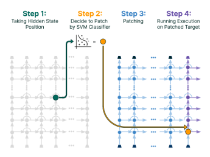

Literature Review: Auto-Patching: Enhancing Multi-Hop Reasoning in Language Models
This paper introduces “Auto-Patch,” a method designed to improve the multi-hop reasoning capabilities of Large Language Models (LLMs). Building directly upon the PatchScopes framework, the authors automate the process of “patching” or replacing hidden states during inference. The core contribution is the use of a trained classifier (an SVM) to dynamically decide which token representations should be copied from an earlier layer to a later one, aiming to correct reasoning failures. Evaluated on the MuSiQue 2-hop question-answering dataset, Auto-Patch improves the LLaMA 2 (7B) model’s solve rate from a baseline of 18.45% to 23.63%, closing some of the gap to standard Chain-of-Thought (CoT) prompting, which achieves 27.44%.
Key Insights
The central idea of this work is to transition model editing from a manual, exploratory practice to a learned, automated one. The original PatchScopes paper provided a powerful tool for interpretability research, but its reliance on manual intervention limited its practical application. Auto-Patch proposes a solution by framing the intervention decision as a supervised learning problem.
The methodology for training the classifier is straightforward:
- For a given question, perform a brute-force patch for each token position, copying the hidden state from a source layer (i.e., layer 15) to a target layer (i.e., layer 8).
- Evaluate if the patch improved the model’s likelihood of generating the correct answer.
- Label the hidden state vector as
True(patch is beneficial) orFalse(patch is not). - Train a binary classifier on this generated dataset of hidden states and their corresponding labels.
During inference, the model performs a first forward pass to generate hidden states, which are fed to the classifier. A second forward pass is then executed, applying the patches as predicted by the classifier.
The paper’s analysis reveals that the classifier learns a simple but interesting heuristic. It mostly learns not to patch structural or non-content tokens, such as the start-of-sentence symbol <s>, unknown tokens <unk>, or punctuation like .. This implies that for the vast majority of content-bearing tokens, the intervention is deemed beneficial. This suggests the information present at the mid-to-late layers (like layer 15) is generally more useful for the final output than the representations at an earlier intermediate layer (like layer 8) for this specific task.
Furthermore, experiments exploring different source and target layer combinations confirm the well-established principle that different layers in a transformer have specialized roles. Performance peaks when patching from mid-level layers (around 10-12), which are thought to capture more abstract semantic relationships, as opposed to early layers (focused on syntax) or late layers (over-specialized for next-token prediction).
Example
The Auto-Patch framework is designed to intervene during inference to improve reasoning. Consider a 2-hop question from the MuSiQue dataset: “What award was received by the person who authored Missing Person?”
The process would be as follows:
- First Pass: The model processes the input question in a standard forward pass.
- Classification: At layer 15, the hidden state for each token is extracted and passed to the trained SVM classifier. The classifier predicts whether patching this state into layer 8 would be beneficial.
- Patching Decision: The classifier might predict
Truefor most content tokens (“award,” “received,” “person,” “authored,” “Missing,” “Person”) butFalsefor the<s>token. - Second Pass: A second forward pass is initiated. When the computation reaches layer 8, the original hidden states for the tokens marked
Trueare replaced with their corresponding hidden states from layer 15. - Final Generation: The model continues the forward pass from layer 8 with the patched representations, which ideally provides it with the necessary information linkage to connect “Missing Person” to its author, and then that author to the award they received, thus generating the correct final answer.

Figure: An illustration of the Auto-Patch framework. A classifier determines whether a hidden state from a source layer should be patched into a target layer to improve the model's reasoning process.
Ratings
Novelty: 2/5
The work is a logical and incremental extension of the PatchScopes paper. Automating a manual process with a standard classifier is a useful engineering step but does not introduce a fundamentally new concept or capability. The core ideas of model editing via patching belong to prior work.
Clarity: 3/5 The paper is well-structured and clearly written. The methodology, experimental setup, and results are presented in a way that is easy to follow. The authors do a good job of explaining what they did and how they did it.
Personal Comments
This paper is an interesting proof-of-concept that successfully automates the intervention strategy proposed by PatchScopes. However, its contributions feel preliminary and raise more questions than they answer.
My primary concern is the lack of a deep, mechanistic explanation for why the method works. The classifier is treated as a black box trained on empirical outcomes. While the analysis of which tokens are not patched provides a clue, it doesn’t reveal what specific information is being corrected or inserted by the patch. Is an entity representation being updated? Is a faulty relational computation being bypassed? The work demonstrates that a patch from layer 15 to layer 8 helps, but it fails to provide the satisfying how or why. This approach feels less like reverse-engineering a model’s reasoning circuit and more like applying a brute-force fix.
The second major issue is the practical justification. Auto-Patch improves over the baseline but is still significantly outperformed by standard Chain-of-Thought (CoT) prompting. The paper is silent on the critical trade-offs of this approach. Auto-Patch requires two full forward passes plus the overhead of a classifier, which is computationally expensive. For this method to be compelling, it would need to offer a significant advantage over CoT, such as much lower latency or generation cost. Without a thorough analysis of runtime, token count, and overall compute, it is difficult to see a scenario where one would choose this method over the existing, higher-performing alternative.
This work reminds me of early attempts at model steering, where we would try to nudge model behavior through targeted interventions. The automation aspect is a modern touch, but the core challenge remains: making these interventions both effective and efficient. To move this work forward, I would have explored more interpretable classifiers (i.e., sparse linear models) to understand the features within the hidden state that trigger a patch. This might have provided the mechanistic insight that is currently missing. Ultimately, for this line of research to be impactful, it must either beat state-of-the-art methods on a key metric or provide novel insights into the inner workings of these complex models. As it stands, this paper doesn’t quite achieve either.
Enjoy Reading This Article?
Here are some more articles you might like to read next: